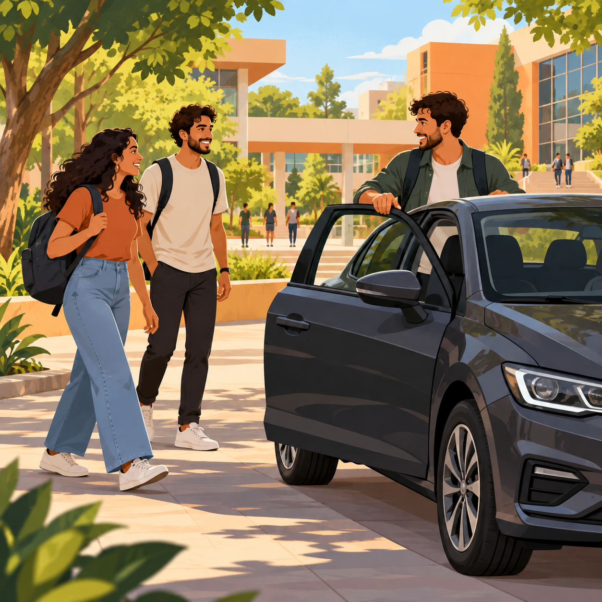

Carona avulsa
Procure uma vaga para uma data e um trajeto específicos, de ida ou de volta da faculdade.

Procure uma vaga para uma data e um trajeto específicos, de ida ou de volta da faculdade.
Combine caronas recorrentes com alguém do mesmo curso e período/turma, conforme os dias e trajetos do plano.
Informe o percurso que você já pretende fazer, o horário de saída e quantas vagas pode oferecer.
Compare as ofertas disponíveis e acompanhe o aceite, o pagamento de teste e a confirmação no seu painel.
Procure viagens compatíveis com a ida ou a volta da faculdade.
Veja a saída, o ponto de encontro, as vagas e o valor antes de solicitar.
Confira o status do pedido antes de contar com a carona.
As ofertas dependem de quem vai fazer o percurso. Uma solicitação pendente ainda não é uma vaga confirmada.
Em Minhas caronas, você acompanha seus pedidos, as viagens que oferece e os trajetos do plano mensal.
Você busca e oferece caronas com a mesma conta. O cadastro usa e-mail comum; o vínculo acadêmico pode passar por análise.
Solicitações pendentes e caronas confirmadas.
Seu percurso, seus horários e suas vagas.
Dias e trajetos combinados com a sua turma.
O plano mensal reúne motorista e passageiro do mesmo curso, período numérico e turma. Confira os dias e escolha ida, volta ou os dois trajetos.
Combinar os dias e horários antes do período contratado.
Saber quais trajetos fazem parte do plano.
Consultar as reservas recorrentes em Minhas caronas.
A prévia mostra os trechos e o total proporcional antes do pedido. Feriados e recessos já conhecidos ficam fora do cálculo. Se uma aula for suspensa após a contratação, a parcela do trecho é destinada ao aplicativo, sem repasse ao motorista; o passageiro pode confirmar ou contestar o registro.
Confira veículo e placa após a confirmação da reserva. Use o PIN somente ao embarcar e acompanhe os registros no seu painel.
O UniCarona não acompanha localização em tempo real nem aciona atendimento de emergência.
Motorista e veículo passam por análise antes da publicação de ofertas.
Após a confirmação, o passageiro pode conferir os dados do motorista e do veículo e usar o código de embarque.
Compartilhe os detalhes da carona, registre uma ocorrência vinculada à reserva e bloqueie novas combinações.
Não. O cadastro usa e-mail comum. Isso não comprova matrícula nem vínculo com a UNICEPLAC.
Não. O UniCarona é um projeto independente, sem vínculo oficial com a instituição.
Motorista e passageiro precisam pertencer ao mesmo curso, período numérico e turma. As informações declaradas não equivalem a uma matrícula verificada.
O valor é calculado a partir dos custos do trajeto e aparece antes de solicitar a vaga. No mensal, confira os valores de cada trecho e o desconto da agenda contratada.
Não. Ela depende de disponibilidade e confirmação, e pode haver cancelamentos. O projeto não garante um motorista substituto.
Crie sua conta, confirme o e-mail e confira as ofertas no painel. O ambiente atual usa pagamentos de teste, sem dinheiro real.
Compartilhe um percurso que você já pretende fazer. Depois da aprovação como motorista, você pode informar destino, horário de saída e vagas disponíveis.
Os combinados e as condições de cancelamento ficam disponíveis antes da confirmação.
Experimente informar seu trajeto e conheça a proposta do UniCarona.